材料有机化学
重点题目汇总
陕西科技大学 · 期末复习
28 道练习题目
13 个知识章节
考题从图库抽取
01
有机化合物命名IUPAC 系统命名法 · 官能团优先顺序
题目图片
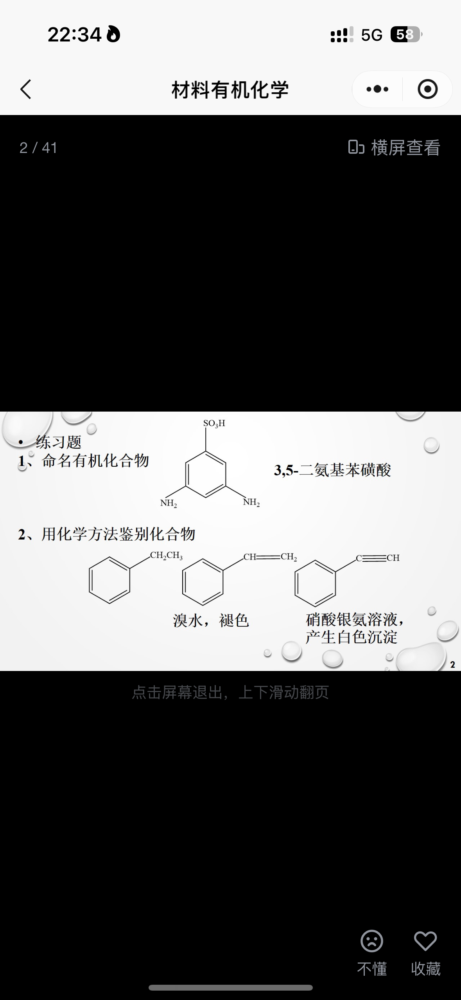
IMG_9365 · 有机化合物命名
题目 1：命名有机化合物（含氨基苯磺酸类）
母体识别：苯磺酸为母体，-SO₃H 直接连在苯环上
编号：磺酸基所在碳为 1 位，氨基取代位次最小
答案示例：
3-氨基苯磺酸（间氨基苯磺酸）
5-氨基-1-萘磺酸（萘环系磺酸衍生物）
命名格式：取代基位次-取代基名-母体名
3-氨基苯磺酸（间氨基苯磺酸）
5-氨基-1-萘磺酸（萘环系磺酸衍生物）
命名格式：取代基位次-取代基名-母体名
题目 2：化学方法鉴别——溴水褪色 + 硝酸银氨溶液产生白色沉淀
Br₂ 水褪色：化合物含 C=C、C≡C 或为酚类、芳胺（发生亲电取代/氧化）
AgNO₃/NH₃ 白色沉淀：末端炔烃（RC≡CH）的鉴定反应——生成炔化银白色沉淀
鉴别结论：同时满足溴水褪色 + 银氨溶液产生白色沉淀 → 末端炔烃（RC≡CH）
反应：RC≡CH + Ag(NH₃)₂⁺ → RC≡C-Ag↓（白色）+ NH₄⁺ + NH₃
反应：RC≡CH + Ag(NH₃)₂⁺ → RC≡C-Ag↓（白色）+ NH₄⁺ + NH₃
速记要点
- 主链选择：含官能团的最长碳链
- 编号规则：从离官能团最近端开始
- 官能团优先级：羧酸 > 酯 > 酰胺 > 醛 > 酮 > 醇 > 胺 > 烯烃 > 炔烃 > 烷烃
- 立体化学标注：R/S 构型、E/Z 构型必须标注
02
烷烃与环烷烃自由基稳定性 · 构象分析 · 环烷烃异构
题目图片
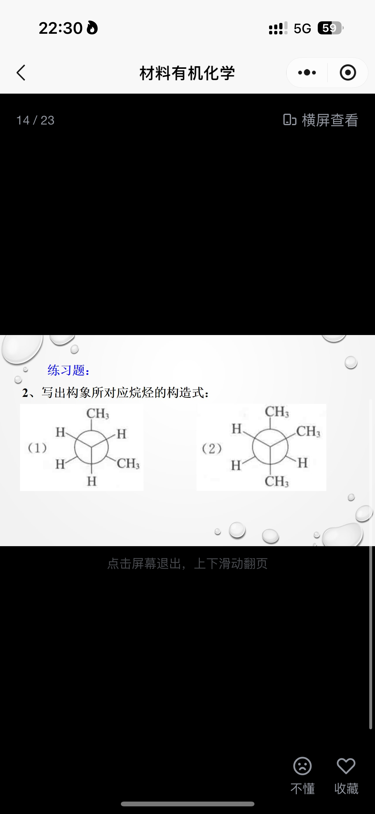
IMG_9357 · 烷烃构造式
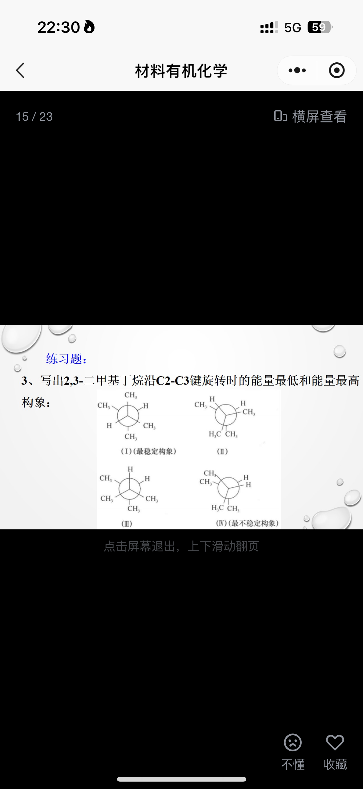
IMG_9358 · 2,3-二甲基丁烷构象
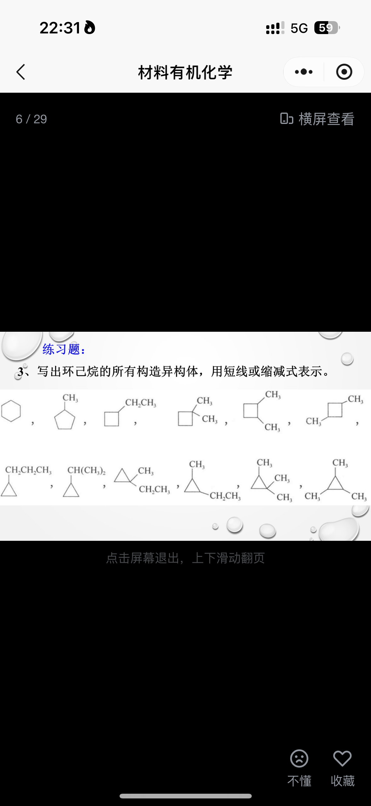
IMG_9360 · 环己烷构造异构体
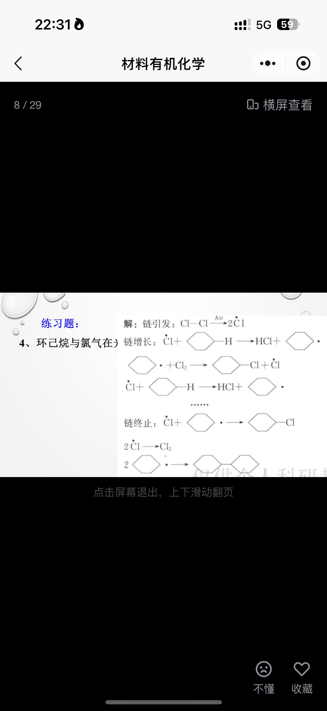
IMG_9361 · 环己烷自由基取代
题目 1：写出构象所对应烷烃的构造式
解题思路：将 Newman 投影式转换为锯架式或楔形式，再写出构造式。
关键：Newman 投影中，前面碳的三个键呈 Y 形，后面碳用圆圈表示。确认每个碳上连接的基团后直接写出。
方法：沿 C-C 键观察，前面的碳的取代基在 Y 形方向，后面的碳的取代基在圆圈边缘。将所有基团归属到两个碳上即为构造式。
题目 2：2,3-二甲基丁烷 C2-C3 键旋转——能量最低和最高构象
分析：2,3-二甲基丁烷沿 C2-C3 键旋转，每个碳上连接：-H, -CH₃, -CH(CH₃)₂
能量最低（最稳定）构象——对位交叉式：两个大基团（-CH₃ 和 -CH(CH₃)₂）彼此远离，二面角 180°。在 Newman 投影中，前碳的 CH₃ 与后碳的 CH₃ 交错排列。
能量最高（最不稳定）构象——全重叠式：两个大基团彼此重叠，二面角 0°。Newman 投影中前后取代基完全重叠。
答案：
稳定构象（对位交叉）：两个 CH₃ 处于对位，二面角 ≈ 180°，空间位阻最小
不稳定构象（全重叠）：CH₃ 与 CH₃ 重叠，扭转角 ≈ 0°，范德华斥力最大
能量差约 3-5 kcal/mol（取决于基团大小）
稳定构象（对位交叉）：两个 CH₃ 处于对位，二面角 ≈ 180°，空间位阻最小
不稳定构象（全重叠）：CH₃ 与 CH₃ 重叠，扭转角 ≈ 0°，范德华斥力最大
能量差约 3-5 kcal/mol（取决于基团大小）
题目 3：环己烷的所有构造异构体
环己烷分子式 C₆H₁₂，构造异构体包括不同环大小和支链。
答案（C₆H₁₂ 环烷烃异构体共 12 个）：
1. 环己烷 (cyclohexane)
2. 甲基环戊烷 (methylcyclopentane)
3. 乙基环丁烷 (ethylcyclobutane)
4. 1,1-二甲基环丁烷
5. 1,2-二甲基环丁烷（顺/反）
6. 1,3-二甲基环丁烷（顺/反）
7. 丙基环丙烷
8. 异丙基环丙烷
9. 1-甲基-1-乙基环丙烷
10. 1,1,2-三甲基环丙烷等
1. 环己烷 (cyclohexane)
2. 甲基环戊烷 (methylcyclopentane)
3. 乙基环丁烷 (ethylcyclobutane)
4. 1,1-二甲基环丁烷
5. 1,2-二甲基环丁烷（顺/反）
6. 1,3-二甲基环丁烷（顺/反）
7. 丙基环丙烷
8. 异丙基环丙烷
9. 1-甲基-1-乙基环丙烷
10. 1,1,2-三甲基环丙烷等
题目 4：环己烷与氯气光照反应
反应类型：自由基取代反应（SR）
链引发：Cl₂ → 2Cl·（光照或加热，Cl-Cl 键均裂）
链增长：Cl· + RH → HCl + R·；R· + Cl₂ → RCl + Cl·
链终止：Cl· + Cl· → Cl₂；R· + Cl· → RCl；R· + R· → R-R
答案：产物为氯代环己烷（C₆H₁₁Cl），反应机理为自由基链式反应。由于环己烷中所有 H 等价，得到单一产物。
速记要点
- 自由基稳定性：苄基/烯丙基 > 3° > 2° > 1° > ·CH₃
- 构象：交叉式最稳定（对位交叉），重叠式能量最高
- 环烷烃：环己烷椅式构象最稳定
03
立体化学手性碳 · 对映异构 · R/S 构型 · 费歇尔投影式
题目图片
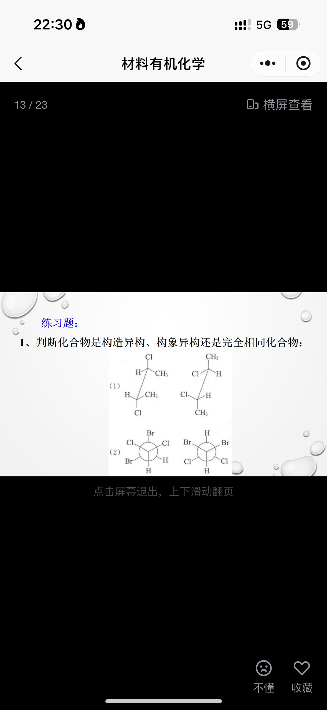
IMG_9356 · 构造异构、构象异构判断
题目：判断每对化合物——构造异构、构象异构还是完全相同（含环己烷取代衍生物）
判断流程（三步法）：
Step 1 — 查分子式：两化合物分子式不同 → 不是异构体（不同化合物）。分子式相同 → 继续 Step 2。
Step 2 — 查原子连接顺序：画出每个化合物的平面结构式。连接顺序不同（如 Cl 在 1 位 vs 2 位）→ 构造异构体 (Constitutional isomers)。连接顺序相同 → 继续 Step 3。
Step 3 — 查空间关系：能否通过单键旋转互相转换？能 → 构象异构体 (Conformational isomers)，不能（需断键才能互变）→ 构型异构体，即对映体/非对映体 (Configurational isomers)。若能完全重合 → 完全相同 (Identical)。
题目中具体配对（IMG_9356）：
对(1)：两个环己烷衍生物，含 Cl 和 CN 取代基。检查 Cl 和 CN 的环上位置和相对立体化学（轴向/赤道）。
- 若 Cl 和 CN 的相对位置不同（如 1,2- vs 1,4-）→ 构造异构
- 若位置相同但 stereochemistry 不同（不能通过环翻转互变）→ 构型异构
对(2)：两个环己烷衍生物，含 Br 和 Cl 取代基。同上方法判断。
关键技巧：环己烷椅式构象翻转可使轴向↔赤道互换，但不能改变取代基的连接位置。若两个结构通过椅式翻转即可互变 → 构象异构（或同一化合物）。
对(1)：两个环己烷衍生物，含 Cl 和 CN 取代基。检查 Cl 和 CN 的环上位置和相对立体化学（轴向/赤道）。
- 若 Cl 和 CN 的相对位置不同（如 1,2- vs 1,4-）→ 构造异构
- 若位置相同但 stereochemistry 不同（不能通过环翻转互变）→ 构型异构
对(2)：两个环己烷衍生物，含 Br 和 Cl 取代基。同上方法判断。
关键技巧：环己烷椅式构象翻转可使轴向↔赤道互换，但不能改变取代基的连接位置。若两个结构通过椅式翻转即可互变 → 构象异构（或同一化合物）。
速记要点
- 手性碳：连接四个不同基团的 sp³ 碳
- R/S 判断：按原子序数编号 1→2→3→4，4 放远端，看 1→2→3 旋转方向
- 内消旋体 (meso)：含两个相同手性中心，分子内有对称面，无旋光活性
04
卤代烃与亲核取代反应SN1/SN2 · 碳正离子 · E1/E2 消除 · Saytzeff 规则
题目图片
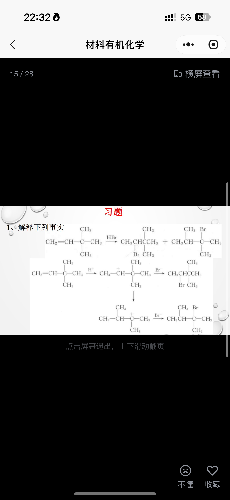
IMG_9362 · 卤代烃反应解释
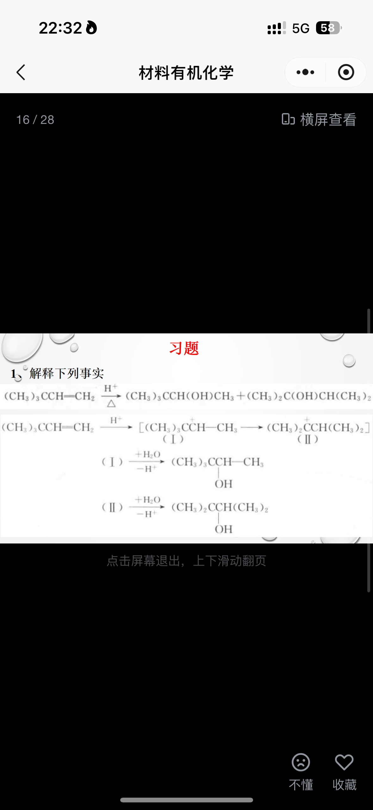
IMG_9363 · 碳正离子重排
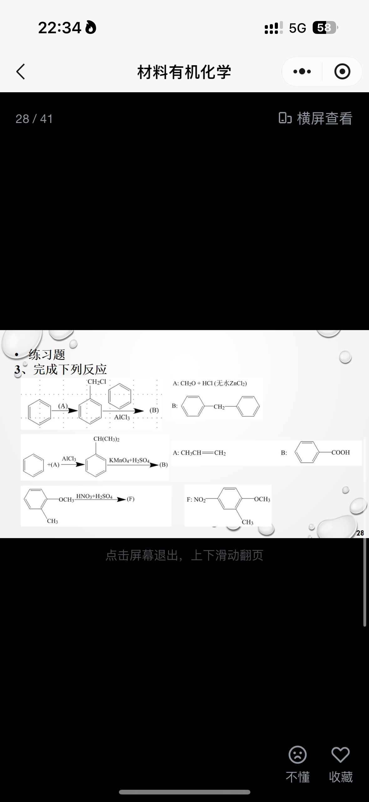
IMG_9366 · 卤代烃化学反应
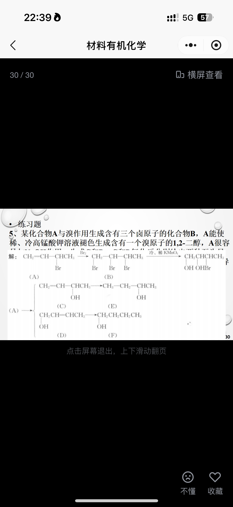
IMG_9376 · 多卤代反应
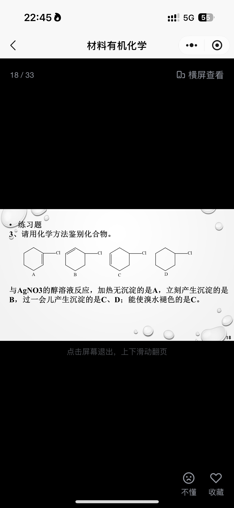
IMG_9381 · 化学方法鉴别
题目 1-2：解释下列事实（碳正离子重排与反应活性）
碳正离子稳定性：3° > 2° > 1° > CH₃⁺。苄基型和烯丙基型碳正离子因 p-π 共轭更稳定。
碳正离子重排：当相邻碳上有更大基团（如 H 或 CH₃）可迁移时，1,2-迁移生成更稳定的碳正离子。驱动因素是热力学稳定性。
SN1 反应中的重排：离去基团离去后，碳正离子可能发生 1,2-氢迁移或 1,2-甲基迁移，然后亲核试剂进攻重排后的碳正离子。
典型例子：新戊基溴 (CH₃)₃CCH₂Br 在 SN1 条件下重排为 (CH₃)₂C⁺CH₂CH₃（叔碳正离子），产物为 (CH₃)₂C(OH)CH₂CH₃
解释核心：重排总是朝向更稳定的碳正离子方向。
解释核心：重排总是朝向更稳定的碳正离子方向。
题目 3：完成下列化学反应（卤代烃反应）
SN2 反应条件：强亲核试剂 + 伯卤代烃/仲卤代烃 + 非质子极性溶剂（丙酮、DMSO、DMF）
SN1 反应条件：弱亲核试剂 + 叔卤代烃 + 极性质子溶剂（水、醇、甲酸）
消除反应 E2：强碱（NaOH/醇、KOH/醇、RONa）+ 加热 → 烯烃，遵循 Saytzeff 规则
产物判断要点：
- 伯 RX + 强亲核试剂(NaOH/H₂O) → 醇（SN2）
- 叔 RX + 弱碱(H₂O) → 醇（SN1）+ 少量烯烃
- 叔 RX + 强碱(KOH/EtOH, Δ) → 烯烃（E2）
- 仲 RX：取决于条件，低温/强亲核偏向 SN2；高温/强碱偏向 E2
- 伯 RX + 强亲核试剂(NaOH/H₂O) → 醇（SN2）
- 叔 RX + 弱碱(H₂O) → 醇（SN1）+ 少量烯烃
- 叔 RX + 强碱(KOH/EtOH, Δ) → 烯烃（E2）
- 仲 RX：取决于条件，低温/强亲核偏向 SN2；高温/强碱偏向 E2
题目 5：化合物 A → Br₂ 得三溴产物 B → 冷 KMnO₄ 得含一溴的 1,2-二醇
信息 ①：A + Br₂ → B（含三个 Br）→ A 含一个 Br + 一个 C=C（加 Br₂ 加 2 个 Br）
信息 ②：A 使冷 KMnO₄ 褪色 → A 含 C=C（烯烃）。产物为含一个 Br 的 1,2-二醇 → Br 连在 C=C 的碳上（或被 KMnO₄ 氧化时保留）
推断：A 为含一个 Br 取代的烯烃。最简结构：CH₂=CHCH₂Br（3-溴丙烯 / 烯丙基溴）
A：CH₂=CH-CH₂Br（烯丙基溴 / 3-bromopropene）
B：BrCH₂-CHBr-CH₂Br（1,2,3-三溴丙烷）
A + Br₂/CCl₄ → BrCH₂CHBrCH₂Br
A + 冷 KMnO₄ (稀, OH⁻) → HOCH₂CH(OH)CH₂Br（3-溴-1,2-丙二醇）
B：BrCH₂-CHBr-CH₂Br（1,2,3-三溴丙烷）
A + Br₂/CCl₄ → BrCH₂CHBrCH₂Br
A + 冷 KMnO₄ (稀, OH⁻) → HOCH₂CH(OH)CH₂Br（3-溴-1,2-丙二醇）
题目 6：化学方法鉴别——AgNO₃ 醇溶液区分卤代烃类型
测试原理：RX + AgNO₃ (醇溶液) → AgX↓ + RONO₂。反应速率取决于 R⁺ 稳定性。
立即产生沉淀 → 叔卤代烃（3° RX，形成稳定 3° 碳正离子）或苄卤/烯丙卤（共轭稳定碳正离子）
加热后产生沉淀 → 仲卤代烃（2° RX）
加热也无沉淀 → 伯卤代烃（1° RX，SN2 不经过碳正离子）或芳卤/乙烯基卤（C-X 键强，不电离）
Br₂ 水褪色辅助判断：褪色 → 含 C=C（烯丙基卤或类似）。不褪色 → 饱和卤代烃或芳卤。
答案：
A（加热无沉淀）→ 芳卤（氯苯类，C-X 键与苯环共轭，难断裂）
B（立即沉淀）→ 叔卤代烃或苄卤（3° 碳正离子或苄基碳正离子极稳定）
C（过一会儿沉淀 + 使 Br₂ 褪色）→ 烯丙基卤（C=C 使 Br₂ 褪色，烯丙基碳正离子较稳定）
D（过一会儿沉淀，不褪色）→ 仲卤代烃
A（加热无沉淀）→ 芳卤（氯苯类，C-X 键与苯环共轭，难断裂）
B（立即沉淀）→ 叔卤代烃或苄卤（3° 碳正离子或苄基碳正离子极稳定）
C（过一会儿沉淀 + 使 Br₂ 褪色）→ 烯丙基卤（C=C 使 Br₂ 褪色，烯丙基碳正离子较稳定）
D（过一会儿沉淀，不褪色）→ 仲卤代烃
速记要点
- SN2：一步协同，背面进攻，活性 伯>仲>叔（位阻决定）
- SN1：两步，碳正离子中间体，活性 叔>仲>伯（碳正离子稳定性）
- 碳正离子稳定性：3° > 2° > 1° > CH₃⁺，苄基/烯丙基型更稳定
- Saytzeff 规则：消除产物为取代基最多的烯烃
05
烯烃与炔烃亲电加成 · Markovnikov 规则 · 过氧化物效应 · 氧化裂解
题目图片
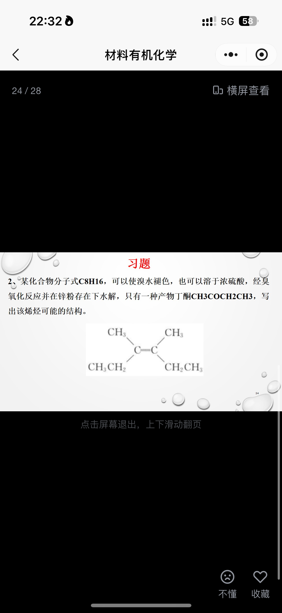
IMG_9364 · 烯烃氧化反应推断
题目：化合物 C₈H₁₆ 的结构推断（O₃ 氧化只得丁酮一种产物）
信息分析：
1. 分子式 C₈H₁₆ → 不饱和度 = (2×8+2-16)/2 = 1 → 含一个 C=C 双键（使 Br₂ 水褪色，溶于浓 H₂SO₄ 也验证了烯烃）
2. O₃ 氧化 / Zn 粉水解 → 只有一种产物：丁酮 CH₃COCH₂CH₃（关键信息！）
3. 核心推理：若臭氧裂解只得单一产物，说明 C=C 两侧的取代模式完全相同（对称烯烃）。每个 C=C 碳裂解后生成一个 C=O，两侧都生成丁酮 → 每个半片都是 (CH₃)(CH₃CH₂)C= 骨架。
4. 将两个半片拼回 C=C：(CH₃CH₂)(CH₃)C=C(CH₃)(CH₂CH₃)
答案：3,4-二甲基-3-己烯 (3,4-Dimethyl-3-hexene)
存在 E 型和 Z 型 两种几何异构体（顺反异构）：
(CH₃CH₂)(CH₃)C=C(CH₃)(CH₂CH₃)
验证：
- 分子式 C₈H₁₆ ✓（两侧各 C₄，共 C₈）
- O₃/Zn/H₂O → 2 × CH₃COCH₂CH₃（丁酮）✓
- 含 C=C 能使 Br₂ 褪色 ✓
- 能与浓 H₂SO₄ 发生亲电加成 ✓
存在 E 型和 Z 型 两种几何异构体（顺反异构）：
(CH₃CH₂)(CH₃)C=C(CH₃)(CH₂CH₃)
验证：
- 分子式 C₈H₁₆ ✓（两侧各 C₄，共 C₈）
- O₃/Zn/H₂O → 2 × CH₃COCH₂CH₃（丁酮）✓
- 含 C=C 能使 Br₂ 褪色 ✓
- 能与浓 H₂SO₄ 发生亲电加成 ✓
速记要点
- Markovnikov 规则：H⁺ 加到氢多的碳上（生成更稳定碳正离子）
- 过氧化物效应：仅 HBr 适用，反 Markovnikov（自由基机理）
- 氧化裂解：O₃ 氧化断双键得醛/酮；KMnO₄ 热氧化得羧酸
- 炔烃酸性：RC≡CH 的 H 具酸性 (pKa ≈ 25)，与 NaNH₂ 反应
06
芳香烃Hückel 规则 · 亲电取代 · 定位效应 · Friedel-Crafts
题目图片
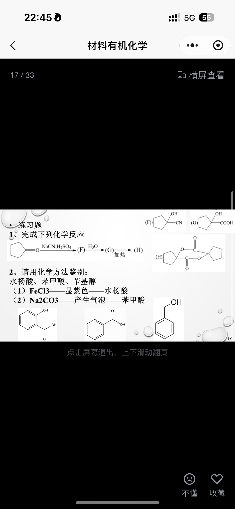
IMG_9380 · 芳香族化学反应
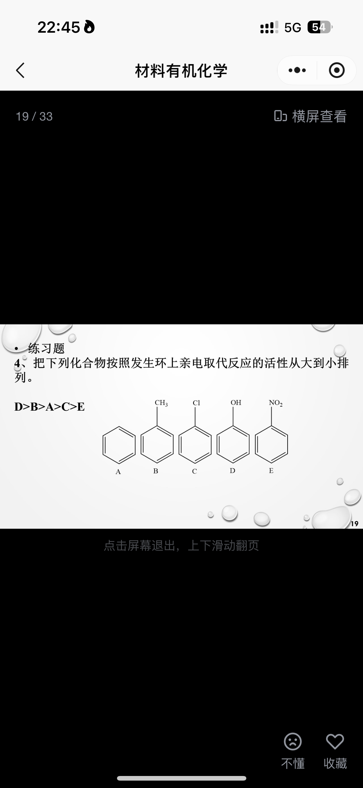
IMG_9382 · 亲电取代活性排序
题目 1：完成下列化学反应（芳香族化合物——亲核取代 + 水解）
反应一：ArCH₂Cl + NaCN/DMSO → ArCH₂CN（苄氯的 SN2 氰基化，DMSO 为非质子极性溶剂加速 SN2）
反应二：ArCH₂CN + H₃O⁺/Δ → ArCH₂COOH（腈的酸性水解得羧酸）
反应三：芳环上的亲电取代反应——硝化（HNO₃/H₂SO₄）、卤代（Br₂/FeBr₃）、F-C 酰基化（RCOCl/AlCl₃）等
反应通式：
ArCH₂Cl →(NaCN/DMSO)→ ArCH₂CN →(H₃O⁺, Δ)→ ArCH₂COOH
DMSO 为极性非质子溶剂，有利于 SN2 反应；CN⁻ 是良好的亲核试剂。
ArCH₂Cl →(NaCN/DMSO)→ ArCH₂CN →(H₃O⁺, Δ)→ ArCH₂COOH
DMSO 为极性非质子溶剂，有利于 SN2 反应；CN⁻ 是良好的亲核试剂。
题目 2：化学方法鉴别——水杨酸、苯甲酸、苄基醇（苯甲醇）
① FeCl₃ 试验：滴加 FeCl₃ 溶液 → 显紫色 → 水杨酸（邻羟基苯甲酸）。酚羟基与 Fe³⁺ 络合显色。
② Na₂CO₃ 试验：加 Na₂CO₃ 溶液 → 产生气泡（CO₂↑）→ 苯甲酸。羧酸酸性强于碳酸，与 Na₂CO₃ 反应放出 CO₂。
③ 余下：既不与 FeCl₃ 显色也不与 Na₂CO₃ 反应 → 苄基醇（苯甲醇 C₆H₅CH₂OH）。醇的酸性太弱不足以与 Na₂CO₃ 反应，无酚羟基也不与 FeCl₃ 显色。
鉴别流程：FeCl₃ 显色 → 水杨酸；Na₂CO₃ 气泡 → 苯甲酸；两者均不反应 → 苄基醇。
关键：水杨酸的酚-OH 与 FeCl₃ 显色；苯甲酸的 -COOH 酸性 > H₂CO₃；苄基醇的一级醇-OH 酸性不足以与 Na₂CO₃ 反应。
关键：水杨酸的酚-OH 与 FeCl₃ 显色；苯甲酸的 -COOH 酸性 > H₂CO₃；苄基醇的一级醇-OH 酸性不足以与 Na₂CO₃ 反应。
题目 2：亲电取代反应活性排序（答案：D > B > A > C = E）
题目中 5 个化合物取代基：D: -OH（苯酚），B: -CH₃（甲苯），A: 苯（无取代），C: -Cl（氯苯），E: -NO₂（硝基苯）
排序依据：取代基的电子效应决定苯环电子密度。给电子基 → 活化（加速反应）；吸电子基 → 钝化（减慢反应）。
(D) -OH：强给电子（p-π 共轭），强活化，邻对位定位 → 活性最高
(B) -CH₃：给电子（超共轭 + 诱导），活化，邻对位定位
(A) 苯：无取代，基准
(C) -Cl：弱吸电子诱导 + 给电子共轭，弱钝化，但仍是邻对位定位
(E) -NO₂：强吸电子（共轭 + 诱导），强钝化，间位定位 → 活性最低
答案：D > B > A > C = E
即：苯酚 > 甲苯 > 苯 > 氯苯 ≈ 硝基苯
C 和 E 均钝化苯环，在题目设定的条件下反应活性相当（均为最难发生亲电取代的底物）。
即：苯酚 > 甲苯 > 苯 > 氯苯 ≈ 硝基苯
C 和 E 均钝化苯环，在题目设定的条件下反应活性相当（均为最难发生亲电取代的底物）。
速记要点
- 芳香性条件：环状、平面、连续 p 轨道、4n+2 个 π 电子
- 邻对位定位基：-NH₂, -OH, -OR, -R, -X（活化，卤素例外）
- 间位定位基：-NO₂, -CN, -COOH, -CHO, -SO₃H（钝化）
07
醇、酚、醚氧化反应 · Lucas 试剂 · Williamson 合成 · 酚酸性
题目图片
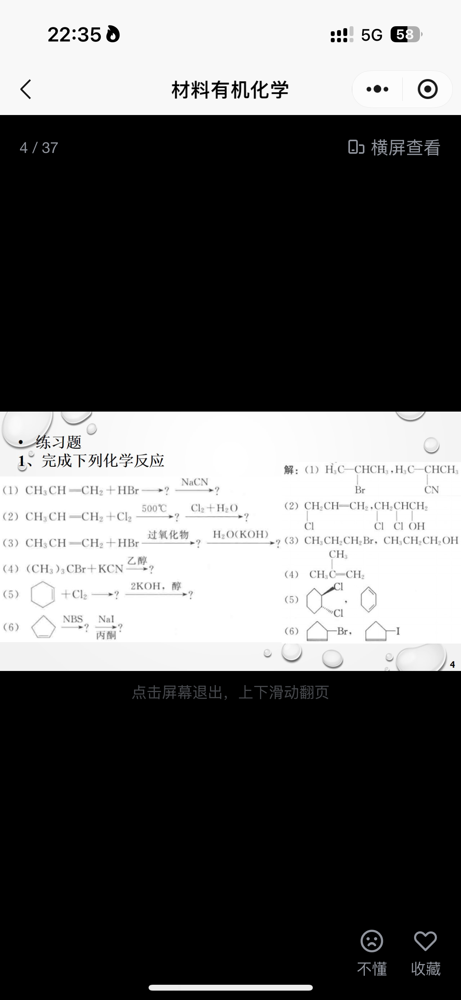
IMG_9370 · 醇的化学反应
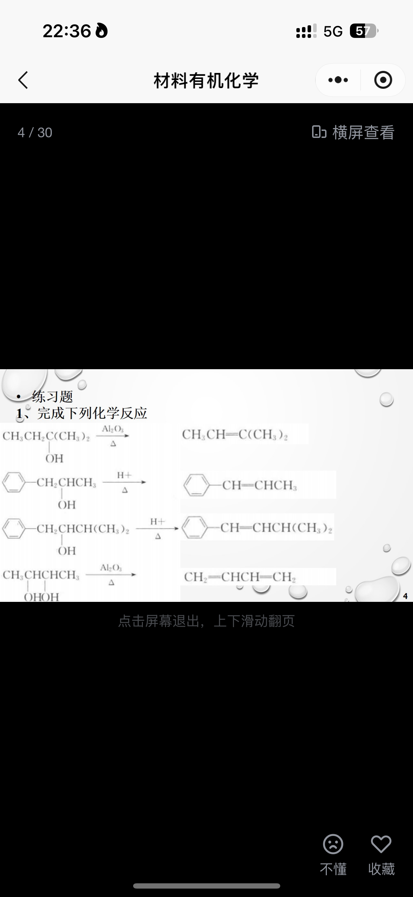
IMG_9372 · 醇的化学反应
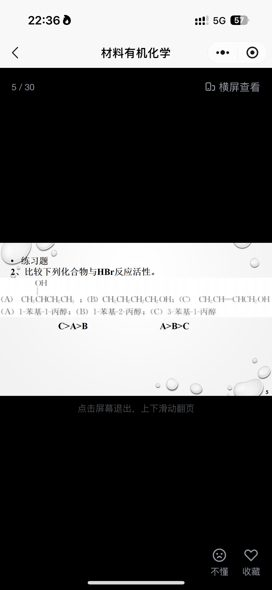
IMG_9373 · 与HBr反应活性比较
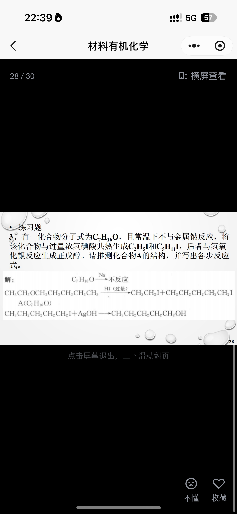
IMG_9374 · 醚的结构推断
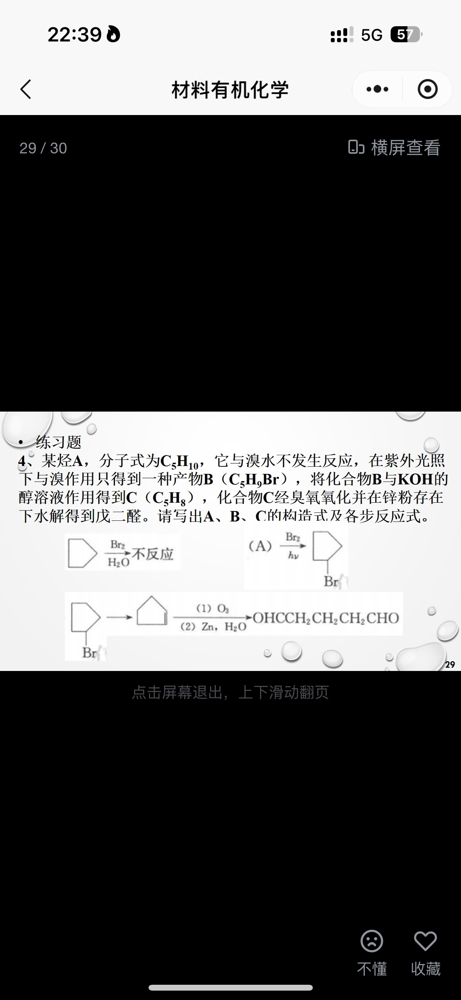
IMG_9375 · 烃的结构推断
题目 1-2：完成下列化学反应（醇的化学性质）
醇 + Na → RONa + 1/2 H₂↑（醇的酸性很弱 pKa≈16-18，但与活泼金属反应）
醇 + HX → RX + H₂O。活性：叔醇 > 仲醇 > 伯醇（SN1 机理为主）
醇 + PBr₃/SOCl₂ → 伯醇/仲醇转化为溴代烃/氯代烃（无重排）
醇脱水 → 浓 H₂SO₄/Δ → 烯烃（E1 消除，遵循 Saytzeff 规则）
题目 3：比较与 HBr 的反应活性
活性规律：醇与 HBr 反应活性取决于碳正离子稳定性。
苄醇 > 烯丙醇 > 叔醇 > 仲醇 > 伯醇
答案：能生成最稳定碳正离子的醇反应最快。苄醇和烯丙醇因共轭效应加速反应。
题目 4：C₇H₈O（应为 C₇H₁₆O）结构推断 —— 醚的 HI 裂解
信息 ①：常温不与金属钠反应 → 不含 -OH 活泼氢 → 排除醇和酚 → 是醚
信息 ②：与过量浓 HI 共热 → 醚键断裂：R-O-R' + 2HI → RI + R'I + H₂O。产物之一经 Ag₂O/H₂O 转化为正戊醇 → 该产物为 C₅H₁₁I（碘代戊烷）
信息 ③：另一产物为 CH₃CH₂I（碘乙烷），而非 CH₃I。结合两碎片 → 原醚为 CH₃CH₂-O-C₅H₁₁（乙基戊基醚）
反应验证：CH₃CH₂-O-(CH₂)₄CH₃ + 2HI → CH₃CH₂I + I(CH₂)₄CH₃；后者 + Ag₂O/H₂O → HO(CH₂)₄CH₃（正戊醇）✓
答案：乙基戊基醚 (Ethyl pentyl ether)
CH₃CH₂-O-CH₂CH₂CH₂CH₂CH₃ (C₇H₁₆O)
或写为 C₂H₅OC₅H₁₁。常温不与 Na 反应（无-OH），HI 裂解得碘乙烷 + 碘戊烷，碘戊烷经 Ag₂O 水解得正戊醇。
注：若原题分子式为 C₇H₈O（芳醚），则可能是苯甲醚 C₆H₅OCH₃ → HI → C₆H₅OH + CH₃I，但酚不能转化为戊醇，OCR 可能存在误读。
CH₃CH₂-O-CH₂CH₂CH₂CH₂CH₃ (C₇H₁₆O)
或写为 C₂H₅OC₅H₁₁。常温不与 Na 反应（无-OH），HI 裂解得碘乙烷 + 碘戊烷，碘戊烷经 Ag₂O 水解得正戊醇。
注：若原题分子式为 C₇H₈O（芳醚），则可能是苯甲醚 C₆H₅OCH₃ → HI → C₆H₅OH + CH₃I，但酚不能转化为戊醇，OCR 可能存在误读。
题目 5：烃 A (C₅H₁₀) → B (C₅H₉Br) → C (C₅H₈) → 戊二醛 全流程推断
A (C₅H₁₀)：与 Br₂ 水不反应 → 无 C=C，为环烷烃。UV/Br₂ 只得一种产物 → 10个H全等价 → 环戊烷 (Cyclopentane)
A → B：环戊烷 + Br₂ (紫外光照) → 自由基取代 → 溴代环戊烷 (C₅H₉Br)。因所有 H 等价，只得一种一溴代产物。
B → C：溴代环戊烷 + KOH/EtOH (醇溶液, Δ) → E2 消除 → 环戊烯 (C₅H₈)
C → 戊二醛：环戊烯 + O₃/Zn/H₂O → 氧化裂解 → 戊二醛 OHC-CH₂-CH₂-CH₂-CHO（开链，C=C 断裂得两端醛基）
A：环戊烷 B：溴代环戊烷 C：环戊烯
C₅H₁₀ →(Br₂/hv)→ C₅H₉Br →(KOH/EtOH, Δ)→ C₅H₈ →(O₃; Zn/H₂O)→ OHCCH₂CH₂CH₂CHO
关键判据：单一溴代产物 → 所有氢等价 → 五元环（环戊烷的 10 个 H 全部等价）；戊二醛（5C 二醛）验证了五元环烯裂解开环。
C₅H₁₀ →(Br₂/hv)→ C₅H₉Br →(KOH/EtOH, Δ)→ C₅H₈ →(O₃; Zn/H₂O)→ OHCCH₂CH₂CH₂CHO
关键判据：单一溴代产物 → 所有氢等价 → 五元环（环戊烷的 10 个 H 全部等价）；戊二醛（5C 二醛）验证了五元环烯裂解开环。
速记要点
- 醇的氧化：伯醇→醛→酸；仲醇→酮；叔醇不反应；PCC 可将伯醇停在醛
- Lucas 试剂：ZnCl₂/HCl，叔醇立即浑浊，仲醇 5-10min，伯醇加热
- Williamson 合成：RONa + R'X → R-O-R'，必须用伯卤代烃
- 酚酸性：pKa ≈ 10（比醇强），吸电子基增强酸性
08
醛和酮亲核加成 · Tollens/Fehling · Aldol 缩合 · Cannizzaro
题目图片
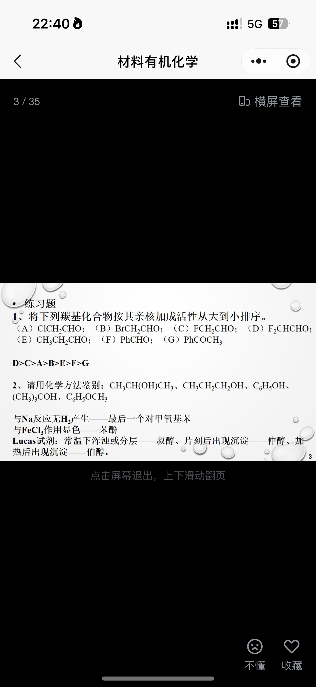
IMG_9377 · 亲核加成活性排序
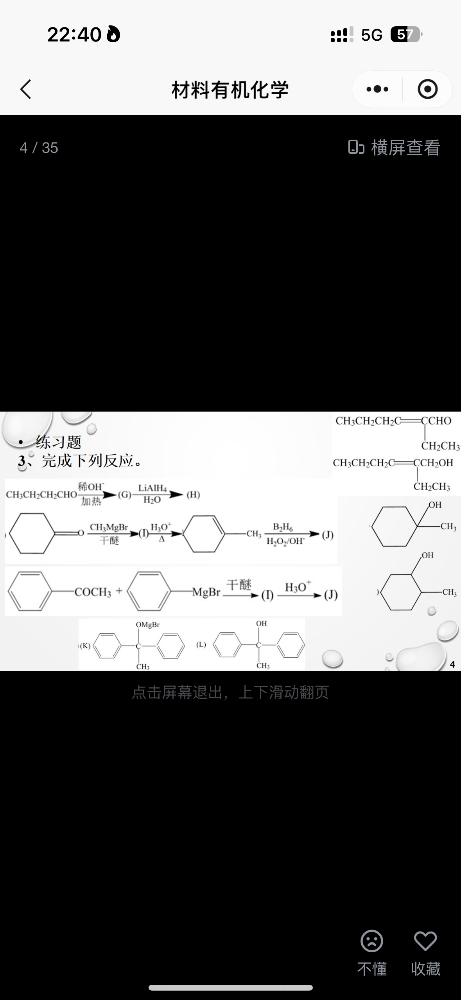
IMG_9378 · 醛酮化学反应
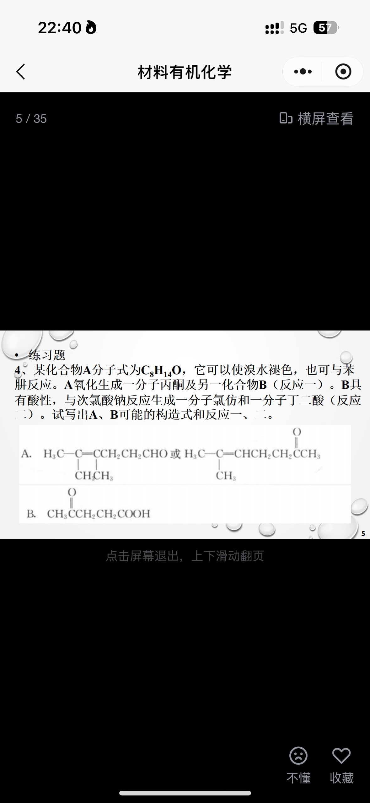
IMG_9379 · 醛酮结构推断
题目 1：羰基化合物亲核加成活性排序（已给出答案：D>C>A>B>E>F>G）
排序依据：羰基碳正电性越大（吸电子基越强）+ 位阻越小 → 亲核加成活性越高
逐一分析：
(D) F₂CHCHO — 两个 F 强吸电子，羰基碳最缺电子 → 活性最高
(C) FCH₂CHO — 一个 F 吸电子，仅次于 D
(A) ClCH₂CHO — Cl 吸电子弱于 F，排在 F 之后
(B) BrCH₂CHO — Br 吸电子最弱（卤素中电负性 F>Cl>Br）
(E) CH₃CH₂CHO — 烷基给电子，活性低于卤代醛
(F) PhCHO — 苯环与 C=O 共轭降低羰基碳正电性；醛基直接连苯环，活性低于脂肪醛
(G) PhCOCH₃ — 酮（位阻 + 电子效应），且苯环共轭 → 活性最低
答案：D > C > A > B > E > F > G
核心规律：吸电子基提高活性（F > Cl > Br），醛 > 酮，脂肪族 > 芳香族
核心规律：吸电子基提高活性（F > Cl > Br），醛 > 酮，脂肪族 > 芳香族
题目 2：化学方法鉴别——CH₃CH(OH)CH₃、CH₃CH₂CH₂OH、C₆H₅OH、(CH₃)₃COH、C₆H₅OCH₃
① Na 金属试验：加 Na，观察是否产生 H₂↑。不反应（无气泡）→ C₆H₅OCH₃（苯甲醚），无 -OH
② FeCl₃ 试验：滴加 FeCl₃ 溶液，显紫色 → C₆H₅OH（苯酚），酚羟基与 Fe³⁺ 络合显色
③ Lucas 试剂 (ZnCl₂/浓 HCl)：余下 3 个醇，分别加 Lucas 试剂 →
- 立即浑浊/分层 → (CH₃)₃COH（叔丁醇，3°醇）
- 5~10 分钟后出现浑浊 → CH₃CH(OH)CH₃（异丙醇，2°醇）
- 室温不反应，加热后才浑浊 → CH₃CH₂CH₂OH（正丙醇，1°醇）
鉴别流程：Na → FeCl₃ → Lucas 试剂，三步即可区分 5 种化合物。
Lucas 反应机理：ROH + HCl →(ZnCl₂)→ RCl + H₂O，活性 3° > 2° > 1°（取决于碳正离子稳定性）。
Lucas 反应机理：ROH + HCl →(ZnCl₂)→ RCl + H₂O，活性 3° > 2° > 1°（取决于碳正离子稳定性）。
题目 4：化合物 A (C₅H₄O? OCR 疑误) → 氧化 → 丙酮 + B → B 卤仿反应 → CHCl₃ + 丁二酸
A 的性质：使 Br₂ 水褪色 → 含 C=C；与苯肼反应 → 含 C=O。A 为不饱和羰基化合物。
氧化反应一：A + [O] → (CH₃)₂CO（丙酮）+ B。氧化裂解 C=C，一侧生成丙酮 → 含 (CH₃)₂C= 片段。
B 的性质：有酸性（含-COOH），与 NaOCl 发生卤仿反应 → CHCl₃ + HOOCCH₂CH₂COOH（丁二酸）
B 的结构推导（关键）：卤仿反应要求含 CH₃CO- 结构。CH₃CO-R + 3NaOCl → CHCl₃ + RCOONa。产物为丁二酸 → R = -CH₂CH₂COOH。故 B = CH₃COCH₂CH₂COOH（乙酰丙酸 / Levulinic acid）
A 的结构逆推：逆 ozonolysis：将丙酮 (CH₃)₂CO 的 C=O 碳与 B (CH₃COCH₂CH₂COOH) 的末端羧基碳以 C=C 连接。B 的 -COOH 碳在裂解前应为 =CH-（氧化后变为 -COOH）。
A： (CH₃)₂C=CH-CH₂-CH₂-CO-CH₃（6-甲基-5-庚烯-2-酮，C₈H₁₄O）
或异构体：CH₂=C(CH₃)-CH₂-CH₂-CH₂-CO-CH₃（2-甲基-6-庚烯...）
B：CH₃COCH₂CH₂COOH（乙酰丙酸 / 4-氧代戊酸）
反应一：A →(KMnO₄/H⁺)→ (CH₃)₂CO + HOOCCH₂CH₂COCH₃
反应二：B + 3NaOCl → CHCl₃ + NaOOCCH₂CH₂COONa →(H⁺)→ HOOCCH₂CH₂COOH
注：OCR 识别的分子式 C₅H₄O 可能为误读，实际分子式以 C=C 裂解产物反推为准。
或异构体：CH₂=C(CH₃)-CH₂-CH₂-CH₂-CO-CH₃（2-甲基-6-庚烯...）
B：CH₃COCH₂CH₂COOH（乙酰丙酸 / 4-氧代戊酸）
反应一：A →(KMnO₄/H⁺)→ (CH₃)₂CO + HOOCCH₂CH₂COCH₃
反应二：B + 3NaOCl → CHCl₃ + NaOOCCH₂CH₂COONa →(H⁺)→ HOOCCH₂CH₂COOH
注：OCR 识别的分子式 C₅H₄O 可能为误读，实际分子式以 C=C 裂解产物反推为准。
速记要点
- 亲核加成活性：甲醛 > 醛 > 酮（电子效应+位阻）
- Tollens 试剂：AgNO₃/NH₃，醛发生银镜反应，酮不反应
- Cannizzaro 反应：无 α-H 的醛在浓碱中歧化
- Aldol 缩合：有 α-H 的醛酮在稀碱中缩合
09
羧酸及衍生物酸性比较 · 酯化/水解 · 酰氯 · Claisen 缩合
题目图片
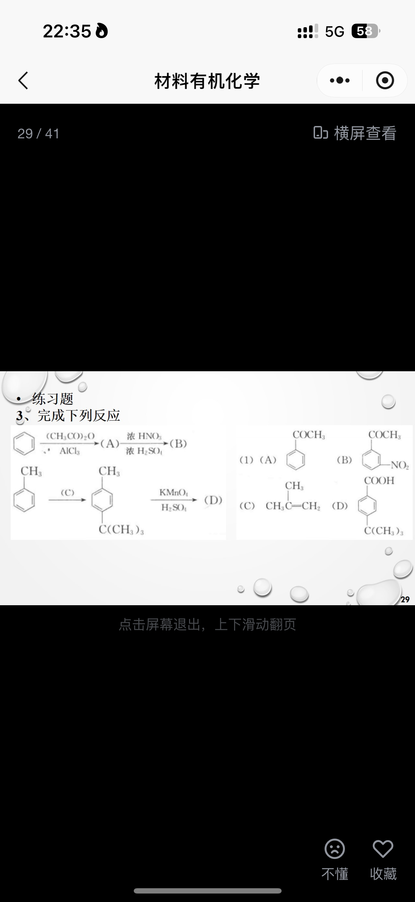
IMG_9367 · 羧酸衍生物反应
题目：完成下列化学反应（羧酸衍生物）
酸酐的反应：(CH₃CO)₂O + ROH → CH₃COOR + CH₃COOH（酯化，比羧酸更活泼）
酸酐 + 胺：(CH₃CO)₂O + RNH₂ → CH₃CONHR + CH₃COOH（乙酰化反应）
硝化反应：HNO₃/H₂SO₄ 条件下芳环上引入 -NO₂
反应活性顺序（关键考点）：酰氯 > 酸酐 > 酯 > 酰胺
原因：离去基团碱性越弱越易离去。Cl⁻ 最弱碱 → 酰氯最活泼；NH₂⁻ 最强碱 → 酰胺最不活泼。
酯化：酸催化可逆；酯水解：碱性条件不可逆（皂化）。
原因：离去基团碱性越弱越易离去。Cl⁻ 最弱碱 → 酰氯最活泼；NH₂⁻ 最强碱 → 酰胺最不活泼。
酯化：酸催化可逆；酯水解：碱性条件不可逆（皂化）。
速记要点
- 酸性：三氯乙酸 > 二氯乙酸 > 一氯乙酸 > 甲酸 > 苯甲酸 > 乙酸
- 衍生物活性：酰氯 > 酸酐 > 酯 > 酰胺（离去基团稳定性）
- Claisen 缩合：两分子酯在碱作用下缩合生成 β-酮酸酯
10
含氮化合物胺的碱性 · 重氮化 · Sandmeyer · 偶合反应
题目图片
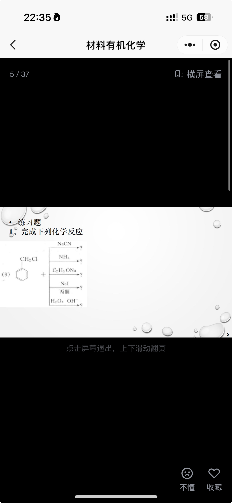
IMG_9371 · 含氮化合物反应
题目：完成下列化学反应（含氮化合物）
卤代烃 + NH₃ → 胺（亲核取代）。过量 NH₃ 有利于伯胺生成，但常得混合产物。
Gabriel 合成法：邻苯二甲酰亚胺钾 + RX → 纯伯胺（避免多烷基化）
酰胺还原：RCONH₂ + LiAlH₄ → RCH₂NH₂
还原胺化：C=O + NH₃/NaBH₃CN → CH-NH₂
胺的碱性排序（考点）：
脂肪仲胺 > 脂肪伯胺 > 脂肪叔胺 > NH₃ > 芳香伯胺
芳香胺碱性弱的原因：N 上孤对电子与苯环共轭，电子密度降低。
脂肪仲胺 > 脂肪伯胺 > 脂肪叔胺 > NH₃ > 芳香伯胺
芳香胺碱性弱的原因：N 上孤对电子与苯环共轭，电子密度降低。
重氮化反应及合成应用
重氮化条件：ArNH₂ + NaNO₂ + 2HCl (0-5°C，必须低温)
重氮盐的转化：
- H₃PO₂ 还原：ArN₂⁺ → ArH（去氨基）
- Sandmeyer：ArN₂⁺ + CuX → ArX (X=Cl, Br, CN)
- 水解：ArN₂⁺ + H₂O/H⁺/Δ → ArOH
- 偶合：ArN₂⁺ + Ar'H → Ar-N=N-Ar'（偶氮染料，需酚或芳胺）
速记要点
- 胺的碱性：仲胺 > 伯胺 > 叔胺 > 氨 > 芳香胺（水溶液中）
- 重氮化：ArNH₂ + NaNO₂ + 2HCl (0-5°C) → ArN₂⁺Cl⁻
- Sandmeyer：ArN₂⁺ + CuCl/CuBr → ArCl/ArBr
11
周环反应Diels-Alder · [4+2] 环加成 · endo 规则
Diels-Alder 反应核心要点
反应通式：共轭二烯 + 亲二烯体 → 六元环烯烃（[4+2] 环加成）
立体化学：顺式加成——二烯体和亲二烯体的立体化学在产物中保留
endo 规则：亲二烯体上有不饱和基团（C=O, C≡N）时，endo 过渡态因次级轨道相互作用更稳定，动力学产物以 endo 为主
典型例子：
1,3-丁二烯 + 乙烯 → 环己烯
1,3-丁二烯 + 马来酸酐 → endo-环加成产物
环戊二烯 + 苯醌 → endo-双环产物
考点：endo 选择性、区域选择性（给电子二烯 + 吸电子亲二烯体）
1,3-丁二烯 + 乙烯 → 环己烯
1,3-丁二烯 + 马来酸酐 → endo-环加成产物
环戊二烯 + 苯醌 → endo-双环产物
考点：endo 选择性、区域选择性（给电子二烯 + 吸电子亲二烯体）
速记要点
- Diels-Alder：共轭二烯 + 亲二烯体 → 六元环（顺式加成）
- endo 规则：endo 过渡态有次级轨道作用，动力学产物通常为 endo 构型
12
波谱分析IR 特征吸收 · ¹H NMR 化学位移 · n+1 裂分规则
波谱推断结构解题步骤
1. 计算不饱和度：U = (2C+2+N-H-X)/2，初步判断骨架
2. IR 分析：1700+ cm⁻¹ → C=O；3200-3600 cm⁻¹ → O-H/N-H；1600 cm⁻¹ → 苯环/C=C
3. ¹H NMR 分析：化学位移判断质子类型；积分比 = 质子数比；裂分遵循 n+1 规则
4. MS 分析（如有）：分子离子峰确定分子量；碎片峰反推结构片段
5. 综合组装：将各片段按不饱和度和化学合理性拼接，验证所有数据
常见考查方式：给出 IR 特征峰 + NMR 信号 + 分子式 → 推断结构
解题关键：先算不饱和度判断芳环/羰基，再用 NMR 确定取代模式。
解题关键：先算不饱和度判断芳环/羰基，再用 NMR 确定取代模式。
速记要点
| 官能团 | IR 波数 (cm⁻¹) | ¹H NMR δ (ppm) |
|---|---|---|
| C=O 羰基 | 1680–1750 | — |
| O-H 醇 | 3200–3600 (宽) | — |
| -CHO 醛氢 | — | 9.0–10.0 |
| 芳氢 | — | 6.5–8.5 |
| -COOH 羧酸 | 2500–3300 (很宽) | 10.0–13.0 |
13
合成题逆合成分析 · Grignard · Aldol · Wittig · 保护基策略
题目图片
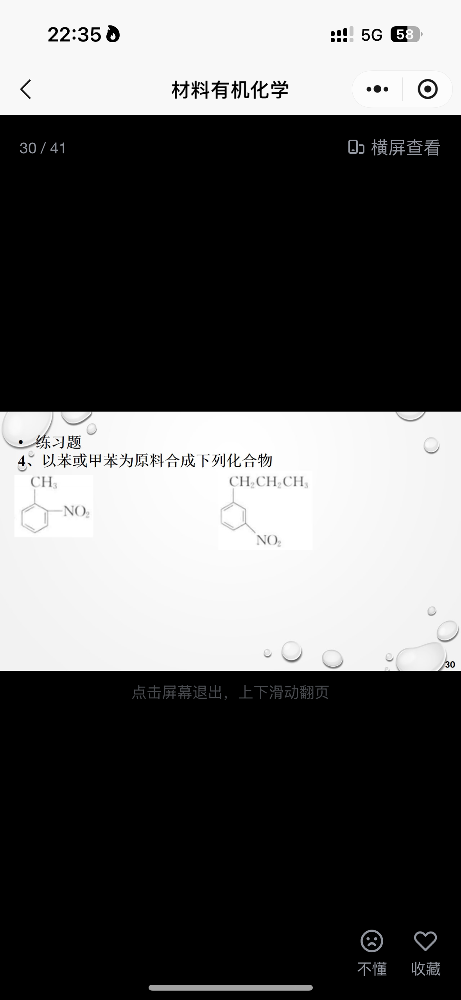
IMG_9368 · 以苯为原料合成
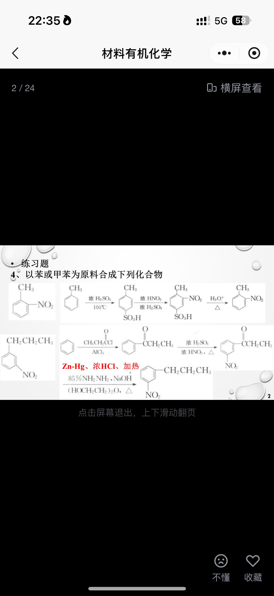
IMG_9369 · 以苯/甲苯为原料合成
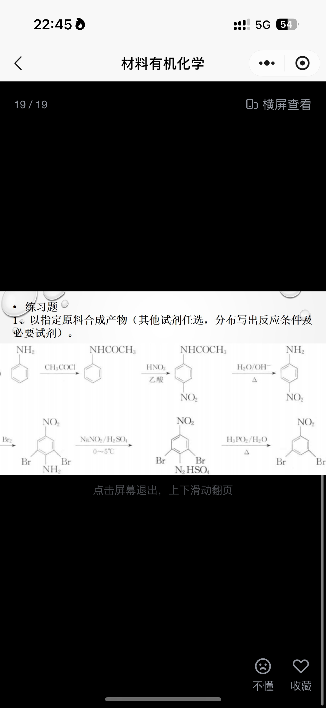
IMG_9383 · 指定原料合成
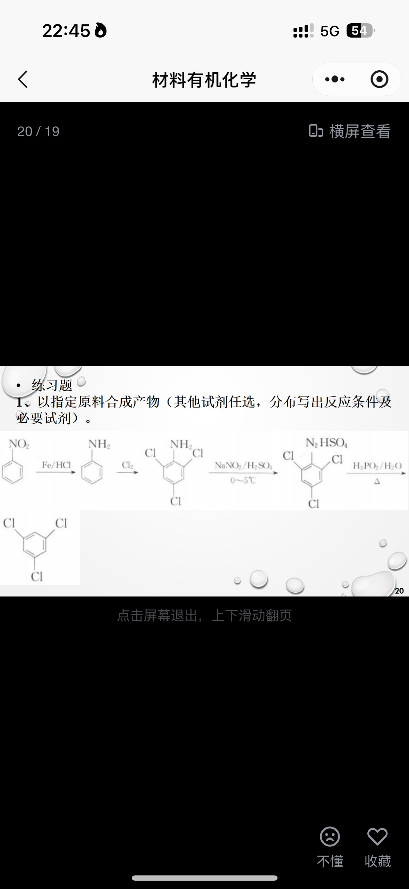
IMG_9384 · 指定原料合成
合成题解题方法论（逆合成分析 —— 四步法）
Step 1 — 分析目标分子：识别官能团、碳骨架、官能团相对位置关系（邻/间/对）
Step 2 — 逆推切断：在关键键处"切断"，思考该键可通过什么反应构建。优先在官能团附近切断。
Step 3 — 选择合成子：确定每个切断对应的合成等价物（亲电/亲核试剂），转化为可购买的原料。
Step 4 — 正向书写：从原料出发，写出每一步反应条件、试剂、中间体和最终产物。每步都要标注反应条件。
IMG_9368 / IMG_9369：以苯或甲苯为原料合成芳香族化合物（定位效应为核心）
核心策略——利用定位效应控制取代位置：
邻对位定位基（-CH₃, -NH₂, -OH, -Cl）：使新基团上邻/对位
间位定位基（-NO₂, -COOH, -SO₃H, -COCH₃）：使新基团上间位
常见目标分子合成模板：
路线 ①：苯 → 间二硝基苯
C₆H₆ →(HNO₃/H₂SO₄)→ C₆H₅NO₂ →(HNO₃/H₂SO₄, Δ)→ m-C₆H₄(NO₂)₂
（第一个 NO₂ 是间位定位基，第二个 NO₂ 进间位）
路线 ②：甲苯 → 对硝基甲苯 / 邻硝基甲苯
C₆H₅CH₃ →(HNO₃/H₂SO₄, 低温)→ p-CH₃C₆H₄NO₂ + o-CH₃C₆H₄NO₂
（CH₃ 是邻对位定位基，硝化进入邻/对位）
路线 ③：苯 → 间硝基苯胺
C₆H₆ →(HNO₃/H₂SO₄)→ C₆H₅NO₂ →(Sn/HCl 或 Fe/HCl 或 H₂/Pd)→ m-C₆H₄(NO₂)(NH₂)
注意：不能先 NH₂ 后 NO₂，因为 NH₂ 是邻对位定位基。必须先 NO₂（间位定位基控制位置）。
路线 ④：苯 → 对溴硝基苯
C₆H₆ →(Br₂/FeBr₃)→ C₆H₅Br →(HNO₃/H₂SO₄)→ p-BrC₆H₄NO₂ + o-BrC₆H₄NO₂
（Br 是邻对位定位基）
C₆H₆ →(HNO₃/H₂SO₄)→ C₆H₅NO₂ →(HNO₃/H₂SO₄, Δ)→ m-C₆H₄(NO₂)₂
（第一个 NO₂ 是间位定位基，第二个 NO₂ 进间位）
路线 ②：甲苯 → 对硝基甲苯 / 邻硝基甲苯
C₆H₅CH₃ →(HNO₃/H₂SO₄, 低温)→ p-CH₃C₆H₄NO₂ + o-CH₃C₆H₄NO₂
（CH₃ 是邻对位定位基，硝化进入邻/对位）
路线 ③：苯 → 间硝基苯胺
C₆H₆ →(HNO₃/H₂SO₄)→ C₆H₅NO₂ →(Sn/HCl 或 Fe/HCl 或 H₂/Pd)→ m-C₆H₄(NO₂)(NH₂)
注意：不能先 NH₂ 后 NO₂，因为 NH₂ 是邻对位定位基。必须先 NO₂（间位定位基控制位置）。
路线 ④：苯 → 对溴硝基苯
C₆H₆ →(Br₂/FeBr₃)→ C₆H₅Br →(HNO₃/H₂SO₄)→ p-BrC₆H₄NO₂ + o-BrC₆H₄NO₂
（Br 是邻对位定位基）
IMG_9383 / IMG_9384：指定原料合成（多步骤串联）
常见合成工具包（必须掌握）：
① 硝化 → 还原 → 重氮化 → Sandmeyer 串联：ArH →(HNO₃/H₂SO₄)→ ArNO₂ →(Fe/HCl)→ ArNH₂ →(NaNO₂/HCl, 0-5°C)→ ArN₂⁺Cl⁻ →(CuCl)→ ArCl / →(CuBr)→ ArBr / →(CuCN)→ ArCN / →(H₃PO₂)→ ArH / →(H₂O, Δ)→ ArOH
② Friedel-Crafts → Clemmensen 串联：ArH →(RCOCl/AlCl₃)→ ArCOR →(Zn-Hg/HCl, Δ)→ ArCH₂R（引入直链烷基，避免重排）
③ 磺化 → 碱熔 → 酚：ArH →(发烟 H₂SO₄)→ ArSO₃H →(NaOH 碱熔, 300°C; H⁺)→ ArOH
④ 保护基策略：当 NH₂ 和 OH 易被氧化/反应时，先乙酰化保护（CH₃COCl 或 (CH₃CO)₂O），反应完毕再水解去保护。
路线示例：苯 → 间氯苯胺 (m-ClC₆H₄NH₂)
C₆H₆ →(HNO₃/H₂SO₄)→ C₆H₅NO₂ →(Cl₂/FeCl₃)→ m-ClC₆H₄NO₂ →(Fe/HCl)→ m-ClC₆H₄NH₂
注意顺序：NO₂（间位定位）先引入，再 Cl（Cl 是邻对位但 NO₂ 控制为间位），最后还原 NO₂ → NH₂。
关键考点：多取代苯的合成顺序不能随意调换——必须根据定位效应设计先后顺序，确保每个新基团进入正确位置。
C₆H₆ →(HNO₃/H₂SO₄)→ C₆H₅NO₂ →(Cl₂/FeCl₃)→ m-ClC₆H₄NO₂ →(Fe/HCl)→ m-ClC₆H₄NH₂
注意顺序：NO₂（间位定位）先引入，再 Cl（Cl 是邻对位但 NO₂ 控制为间位），最后还原 NO₂ → NH₂。
关键考点：多取代苯的合成顺序不能随意调换——必须根据定位效应设计先后顺序，确保每个新基团进入正确位置。
速记要点
- 核心策略：逆合成切断法，从产物倒推原料
- 碳链构建：Grignard 反应、Aldol 缩合、Claisen 缩合、Wittig 反应、Diels-Alder
- 官能团转化：氧化/还原、取代、消除、保护基策略